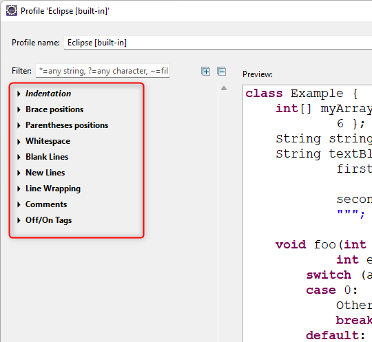

На предыдущем шаге мы уже говорили, что слева в окне редактора расположены секции настроек форматирования, которые выполнены в виде дерева:

Чтобы открыть настройки отступов, разверните в этом дереве самую первую секцию — Indentation.
Тогда вы сможете увидеть настройки отступов, которые будут выглядеть вот так:
Теперь в этой секции нам нужно сделать так, чтобы каждый раз, когда мы нажимаем клавишу TAB,
Eclipse печатал нам 4 пробела.
Как именно это сделать, мы узнаем на следующем шаге упражнения.